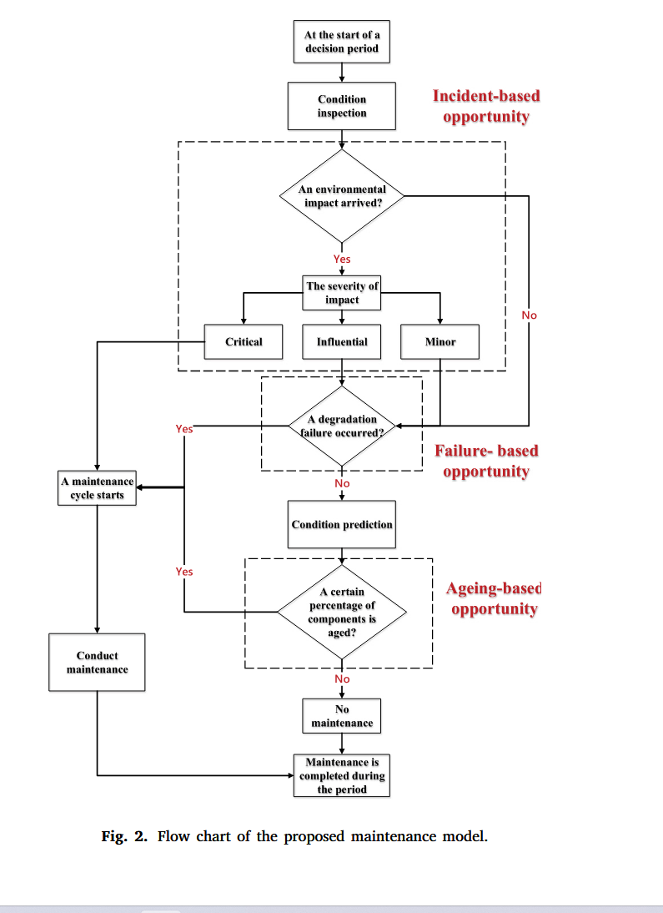

文献阅读：考虑不确定性的海上风电场机会性运维策略优化
Li, M., Jiang, X., Carroll, J., & Negenborn, R. R. (2022). A multi-objective maintenance strategy optimization framework for offshore wind farms considering uncertainty. Applied Energy, 321, 119284. https://doi.org/10.1016/j.apenergy.2022.119284
研究背景
海上风电场的运维面临独特挑战。研究表明，运维成本占全生命周期成本的14%-30%，而海上环境显著降低了风机可用性——海上风机的可用性可能下降至60%-70%。因此，开发高效的运维策略对于降低海上风电成本至关重要。
文献综述
传统运维策略
目前风电行业主要采用两种传统运维策略：
| 策略类型 | 说明 |
|---|---|
| 纠正性运维 | 风机发生故障后才进行维修 |
| 预防性运维 | 按固定周期进行定期维护 |
这两种策略仍是当前风电行业的主流，但存在效率低下的问题。
机会性运维
核心思想：对某个部件执行维护时，会产生一个"机会窗口"，可以利用这个机会同时维修风场中其他符合条件的部件。
现有模型特点：
- 决策变量通常设置为与部件可靠度或平均失效时间相关的维护阈值
- 研究空白1：现有模型未将维护阈值与部件实际状态关联
- 状态监测技术可采集反映关键部件结构状态的诊断信号
- 剩余寿命预测模型可辅助决策者根据部件未来状态进行预测性运维
不确定性因素
海上风电运维面临多重不确定性：
全生命周期运维框架中的不确定性来源：
- 部件可靠性估计的统计不确定性
- 天气多变性导致的维护可达性问题
- 维护资源不足
现有研究的局限（研究空白2）：
- 仅考虑一两种不确定性对运维性能的影响
- 未涉及优化问题
- 未考虑新型运维策略
- 未充分展现不确定性对运维性能的影响
本文考虑的不确定性：
- 故障时间的随机性
- 真实故障时间与实际故障时间的偏差
- 不确定的维护后果
未考虑的不确定性：
- 天气因素影响的可达性
- 船舶及备件可用性等
维护模型的基本构成
典型的维护模型包括以下要素：
- 退化模型：描述系统性能随时间的退化过程
- 状态信息：描述系统当前状态的可用信息
- 维护动作：可能采取的运维措施
- 维护后果：维护动作的预期结果
运维优化目标
运维目标通常包括：可靠性、安全性、全生命周期成本、碳排放等。
本文考虑的优化目标：
- 最小化维护费用（与维护工作量相关的成本）
- 最小化能源损失（由停机造成的生产损失）
维护模型
基本假设
- 所有风机属于同一类型，简化为多个关键组件的集合，任何组件的损坏会导致整个系统失效
- 做出运维决策后，维护活动能顺利实施
- 不考虑材料、船舶租赁以及人力相关成本的时间波动
失效建模
威布尔分布建模： 采用双参数威布尔分布模拟失效概率密度函数：

随机冲击建模：
- 除退化失效外，还考虑随机破坏（如雷击、飓风等意外情况）
- 采用非齐次泊松过程建模随机冲击
- 给定强度函数λ，利用逆分布方法生成冲击发生时间
环境影响分级： 环境影响分为三个等级：
| 等级 | 影响描述 |
|---|---|
| Critical（严重） | 组件直接失效 |
| Influential（中等） | 加速组件退化，导致等效年龄突增 $b_m$ |
| Minor（轻微） | 仅暂时影响风机运行，短时间后恢复正常 |
维护机会与部件状态
三类维护机会：
| 机会类型 | 触发条件 |
|---|---|
| 故障触发机会 | 风机某组件发生退化失效导致停机 |
| 事故触发机会 | 风机遭受突发严重环境冲击 |
| 老化触发机会 | 风电场无故障发生，但一定比例的组件达到特定老化程度 |
维护策略确定框架：

维护类别
考虑四种运维操作：
| 维护类型 | 说明 |
|---|---|
| 故障更换 | 组件完全失效后的更换 |
| 预防性更换 | 在组件失效前进行更换 |
| 大修 | 对组件进行重大修复 |
| 基本维修 | 常规维护和小修 |
总结
本文提出的多目标维护策略优化框架具有以下特点：
- 综合考虑不确定性：同时考虑故障时间随机性、观测误差和维护后果不确定性
- 多机会触发机制：建立故障、事故、老化三类维护机会的统一框架
- 多目标优化：平衡维护成本和能源损失两个 competing 目标
- 状态关联决策：将维护阈值与部件实际状态相结合
该框架为海上风电场的经济高效运维提供了理论基础和决策支持工具。